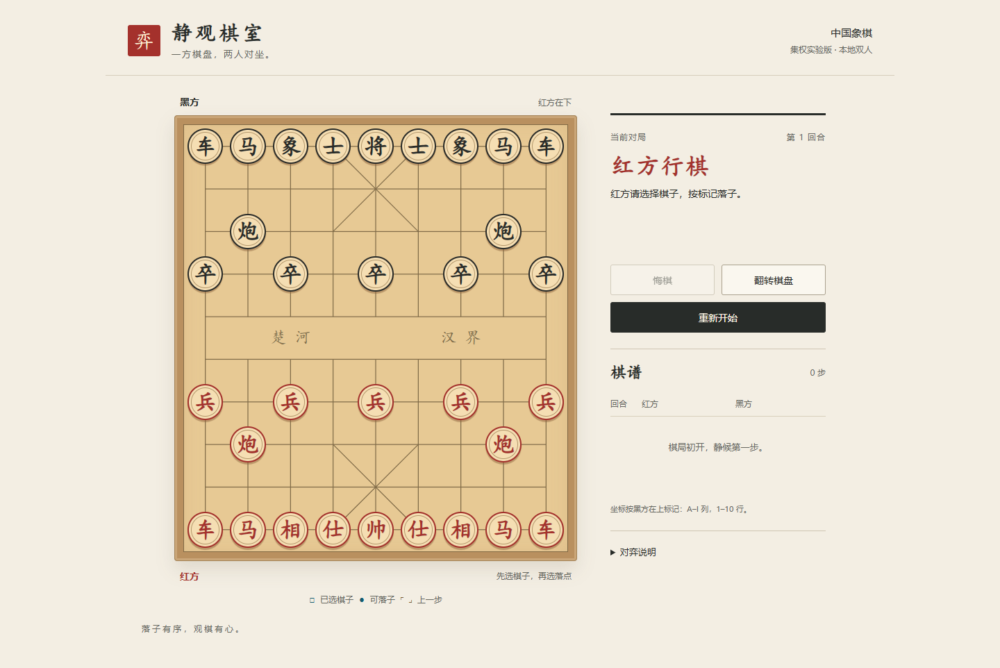
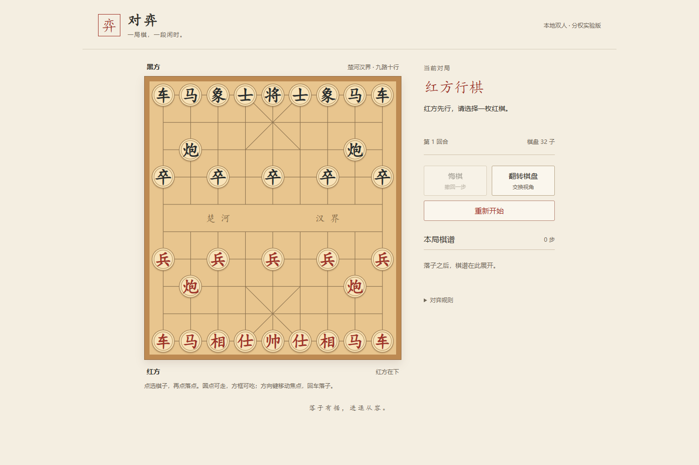
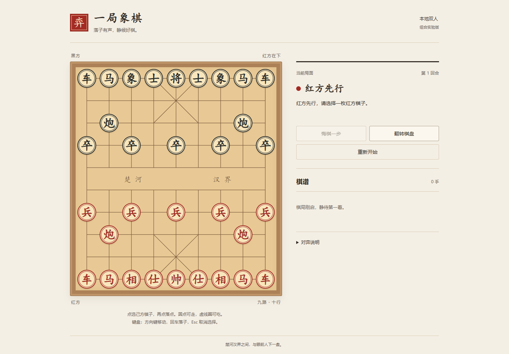

集权 · 静观棋室
红黑分列棋谱，选择与落点图例常显，操作集中于右栏。


打开集权版试玩 →主会话只启动实验、做外部测量和比较。13 个组内 Agent 分别组成 4 席集权、3 席分权、6 席组合团队；三个客户端独立实现。
正在读取本地实验记录…
| 比较项 | 集权 | 分权 | 组合 |
|---|
墙钟时间从各组实际记录起点算至本地交付，包含立约、实现、检查与证据整理，受到并发调度影响。补充测试各组不同，测试数量多不等于质量更高。
红黑分列棋谱，选择与落点图例常显，操作集中于右栏。

打开集权版试玩 →显示剩余棋子数量，操作按钮附简短说明，棋谱逐步展开。

打开分权版试玩 →桌面棋盘更大，键盘操作说明常显，棋谱使用手数计数。

打开组合版试玩 →结论以实际记录为准。
三个版本都是本地双人，支持标准走法、自将过滤、将军/将死/困毙、悔棋、重开、翻转和棋谱。本示例没有联网、AI 或比赛长将长捉裁定。
单次、同模型、每组一个实现者；不是大规模并行开发试验，也没有故障注入或权限强制隔离。未在浏览器自然走完整将死对局，终局主要由引擎与 UI 分支检查覆盖；有限测试不构成完整正确性证明。
本机运行，无外部发布。截图是真实浏览器画面，可点击查看原图。费用和 token 无法逐组精确计量，记为未知。